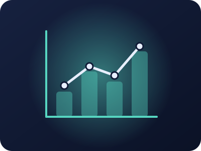

אנליסט/ית נתונים
תובנות עסקיות מתוך מידע
SQL / Power BI
-
☀ שואלים את השאלות
מה הנתונים מספרים לנו הבוקר?
בודקים דוחות יומיים, מוודאים תקינות נתונים ומחדדים עם בעלי עניין את השאלה העסקית.
- בדיקת KPI
- איכות נתונים
- שיחה עם Product
- תכנון ניתוח
-
◉ מנתחים ומגלים
מנתונים גולמיים לתובנה ברורה
כותבים שאילתות, מאחדים מקורות מידע ומחפשים מגמות, חריגות והזדמנויות.
- SQL Queries
- ניקוי נתונים
- ניתוח מגמות
- פילוח משתמשים
-
☾ מספרים סיפור
דשבורד טוב הופך החלטה לפשוטה
בונים ויזואליזציות, בודקים הנחות ומציגים את הממצאים לצוותים העסקיים.
- בניית Dashboard
- Data Visualization
- בדיקת Hypothesis
- הצגת תובנות
-
✦ החלטות מבוססות מידע
מגדירים מה למדוד בפעם הבאה
מתעדים מסקנות, ממליצים על ניסוי ומגדירים מדדים שיאפשרו למדוד את ההשפעה.
- סיכום תובנות
- המלצות עסקיות
- הגדרת KPI
- תכנון ניסוי
דוגמאות קוד להמחשה (3 קבצים)
retention.sqlSELECT
DATE_TRUNC('week', signup_date) AS cohort,
COUNT(DISTINCT user_id) AS users
FROM customers
GROUP BY 1
ORDER BY 1;clean_data.pydf = df.drop_duplicates()
df["revenue"] = pd.to_numeric(
df["revenue"], errors="coerce"
)
df = df.dropna(subset=["user_id"])
print(df.describe())insight.md# Weekly insight
Activation increased by 8%.
Possible driver:
- Faster onboarding flow
Next step: validate with an A/B test.